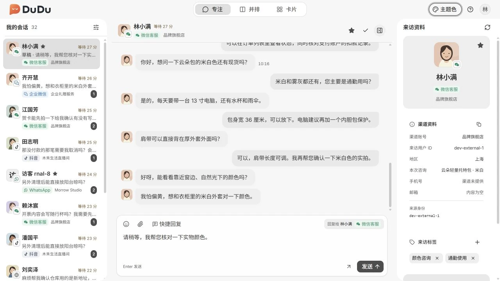
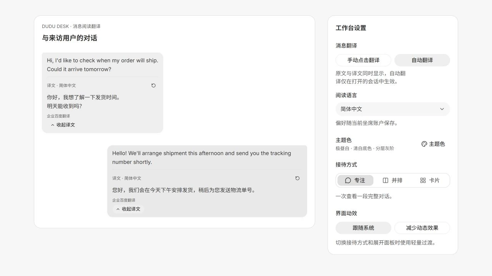

Handle channel messages with the conversation context in view.
For support agents handling daily conversations: review history, reply and maintain visitor details in one workspace. Use a browser or build the desktop app.

Read messages in your language
Translate a message on demand or enable automatic translation in workspace settings. Translations appear beside the original text. The initial administrator configures the service in Console.

Key capabilities
Unified conversations
Review channel conversations within your scope and use search and filters to find messages.
Three workspace layouts
Focused, side-by-side and card layouts share conversation data and drafts.
Messages and replies
Read history and incoming messages, send plain-text replies and review send results.
Shared visitor details
Maintain visitor tags and internal notes shared with authorized staff.
Message translation
Translate individual text messages or enable automatic translation. Keep the original text and choose a reading language without changing outbound messages.
How it works
- Sign in as an organization employee to access conversations allowed by your groups.
- Choose a conversation, review its history and send a reply.
- Maintain tags and internal notes, then close or continue the conversation.
Requirements and scope
Outbound replies currently support plain text only. Incoming non-text messages and media retrieval depend on channel capabilities and credentials.
The modules work together: Admin provisions organizations, Console configures teams and channels, Desk handles conversations, and Server provides shared services. MockPulse is an optional development tool.